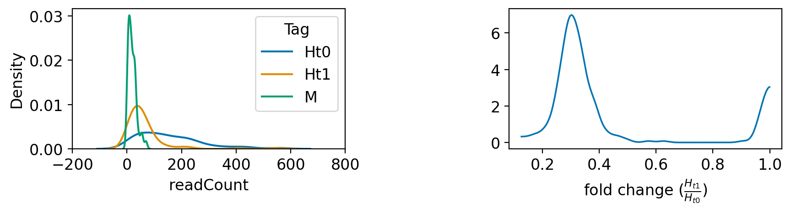

Posts in Blog
Using the Bayesian Approach with PyMC to Analyze Functional Genomics Screens, Part 2
- 19 March 2024
- Blog
Following up on our initial dive into the world of Bayesian statistics in genetics, especially within the nuances of cell biology, here, I’m moving forward to discuss applying Bayesian inference to decipher gene abundance from CRISPR screens. At the heart of these analyses lies the crucial task of ranking gene abundance, a step pivotal for understanding genetic influences and interactions within cells.
In the realm of CRISPR screens, accurately determining gene abundance before and after the intervention is key to identifying genes that play significant roles in the studied condition or trait. In this context, the traditional approach often leans on straightforward comparisons and null hypothesis testing. However, the Bayesian method introduces a nuanced layer by implementing hypothesis testing in a way that incorporates prior knowledge and observed data to update our beliefs about the unknown parameters.

Using the Bayesian Approach with PyMC to Analyze Functional Genomics Screens, Part 1
- 15 March 2024
- Blog
Welcome to the first installment of my blog series, where I delve into the application of Bayesian statistics in the realm of genetics. While Bayesian techniques are prominently featured across various fields—from economics to sports to physics—there seems to be a gap in resources when it comes to genetics, particularly in complex scenarios specific to cell biology.
You might come across ample introductory material and straightforward examples on the subject, but the literature is sparse when it seeks to address the intricacies of cellular-based genetic screens. Recognizing this void, I have elected to divide this blog into three parts. In the first two installments, I’ll showcase the use of Bayesian inference to detect gene enrichment in cellular-based image genetic screens, with an emphasis on model development and analysis. The third entry will illustrate a practical application of Bayesian statistics in the classification of cells from microscopy images.
